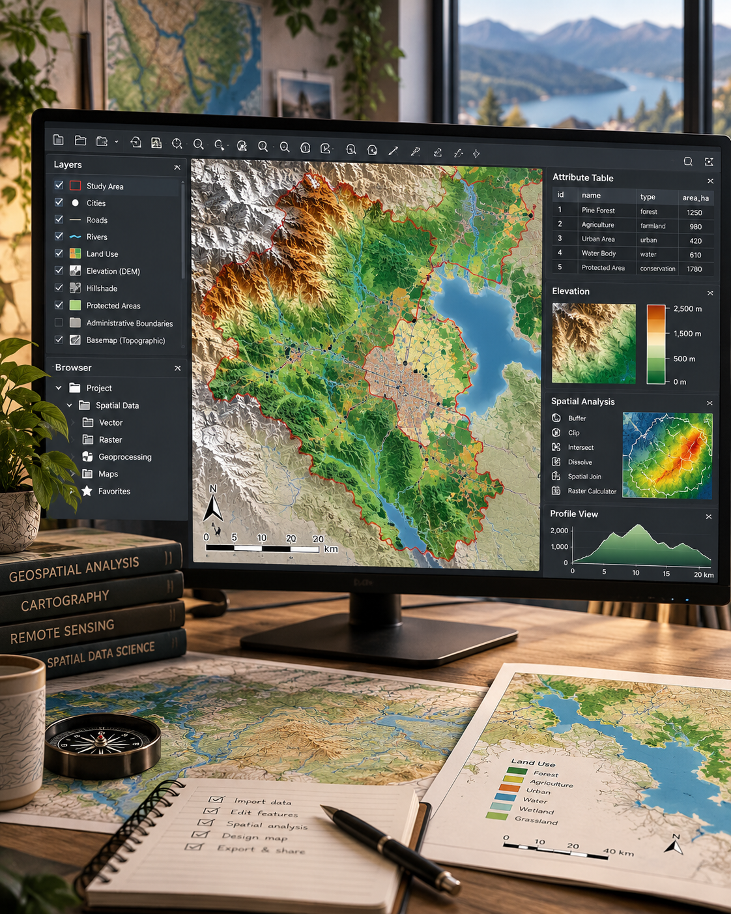
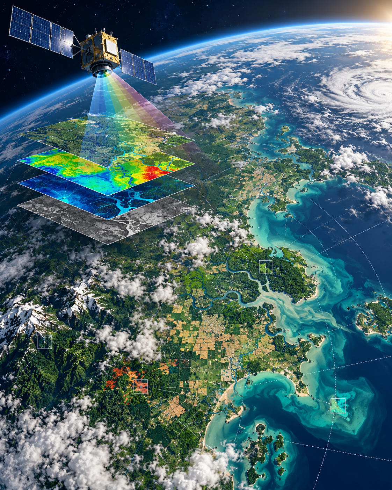

Geoinformatik und Vermessung · 5. Semester · Hochschule Mainz
Hi, ich bin Johanna! 👋
Diese Webseite ist im Rahmen der Geoinformatik-Übungen bei Prof. Dr. Yu Feng entstanden.
Schön, dass du auf meiner Webseite vorbeischaust!
Ich studiere Geoinformatik und Vermessung im 5. Semester an der Hochschule Mainz. In meinem Studium beschäftige ich mich mit geografischen Informationen, digitalen Karten, Vermessung und den Technologien, die dahinterstecken.
Von klassischen Vermessungsmethoden über die Arbeit mit Geoinformationssystemen bis hin zur Verarbeitung räumlicher Daten und Programmierung lerne ich viele unterschiedliche Bereiche kennen.
Auf dieser Webseite möchte ich einen kleinen Einblick in mein Studium geben, meine Projekte vorstellen und zeigen, was ich dabei lerne und ausprobiere.

Studium
Mein Studium auf einen Blick
Geoinformatik und Vermessung an der Hochschule Mainz.
| Bereich | Einblick |
|---|---|
| Hochschule | Hochschule Mainz |
| Studiengang | Geoinformatik und Vermessung |
| Aktuelles Semester | 5. Semester |
| Vermessung | Geodätische Messverfahren und Auswertung |
| Geoinformationssysteme | QGIS und digitale Karten |
| Geodaten | Verarbeitung und Visualisierung räumlicher Informationen |
| Fernerkundung | Satellitenbilder und Earth Observation |
| Webentwicklung | HTML, CSS und JavaScript |
Einblick in meine Arbeit
Meine Webseite
Diese Webseite ist im Rahmen meiner Geoinformatik-Übungen entstanden. Angefangen habe ich mit einer einfachen HTML-Seite, die ich nach und nach mit CSS und JavaScript erweitert habe.
Inzwischen gibt es verschiedene Themenbereiche, einen Light/Night Mode, eine Projektgalerie und einen News-Bereich, der seine Inhalte automatisch aus einer JSON-Datei lädt.
Die Webseite bietet mir die Möglichkeit, das Gelernte direkt anzuwenden und meine Kenntnisse in der Webentwicklung weiterzuentwickeln.
Aktuelles
News
Neuigkeiten aus Studium, Geoinformatik und Webentwicklung.
Weiterklicken
Orte & Ideen
Drei Anlaufstellen, die meine Arbeit mit Karten und räumlichen Daten begleiten.

OpenStreetMap
Eine offene Karte, die durch gemeinsames Wissen wächst.
openstreetmap.org ↗
QGIS
Mit QGIS lassen sich Geodaten analysieren und aussagekräftige Karten gestalten.
qgis.org ↗
Earth Observation
Satellitendaten zeigen Landschaften, Klima und Veränderungen unseres Planeten.
earthobservatory.nasa.gov ↗